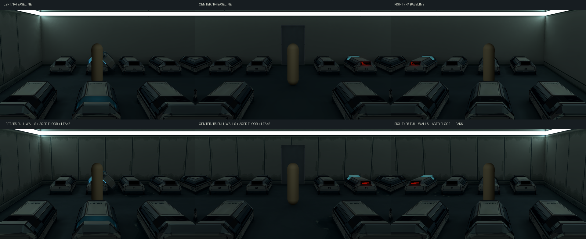
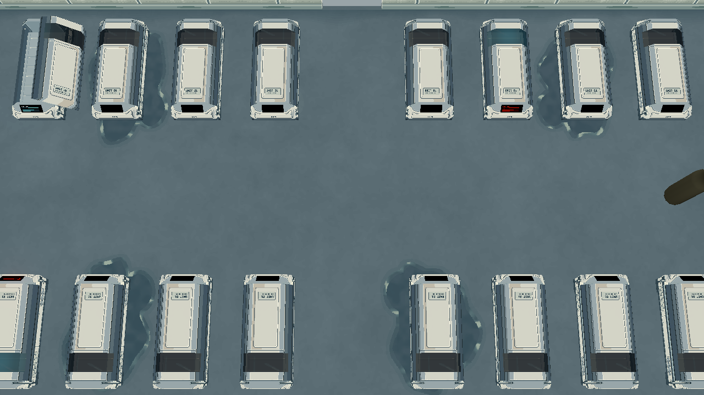
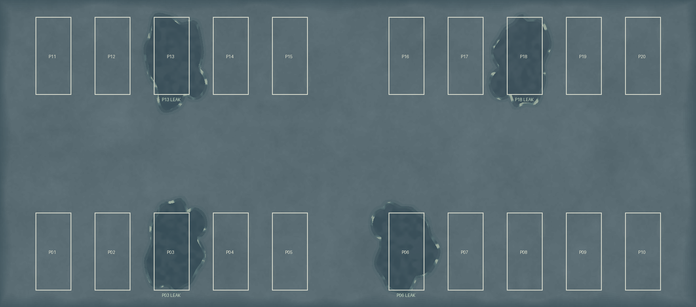

Echoes of Ruin / 終末残響 · 2026-10-27
Room 1 全室墙地 · r5
沿用已暂时认可的 r4 墙面旧化，全墙增加差分；地面统一连续做旧，不加接缝。四个固定舱位 P03 / P06 / P13 / P18 增加旧漏液残迹。布局、模型、UV、舱体、灯光和游戏镜头保持。以下游戏图为实际 Godot 原照明截图，没有提亮。新候选待审。
制作记录与限制 · 六份分层 Aseprite · 文件／回退校验 · 固定漏液位置
相同游戏镜头：r4 局部基线 / r5 全室

上：旧局部样段；下：全室新墙、旧化地坪和少数舱位漏液。点击看原尺寸。
左、中、右：原照明下逐项比较
左侧
中央
右侧
四处漏液：舱基与地面
固定选择，运行时不随机。液体成分与剧情意义尚未确定，不代表与舱内人物状态存在关联。
颜色图诊断与位置图
Base Color 用于检查绘制内容，不是实际发光效果。位置图白框和文字仅为检查标注，不进入游戏。

全室 Base Color 诊断

原生地面与20个舱位标注
四面墙原生贴图
整室巡检
前墙在正常游戏中为剖切用的 Shadows Only；前墙与转角技术图临时显示实体，拍完恢复。复用已修复的 r4 UV2 与连续灯带 irradiance。新颜色图引起的间接反射尚未重新烘焙；本轮用于表面审图，不称为最终新烘焙包。80 texels/m 仅为本次沿用试值。